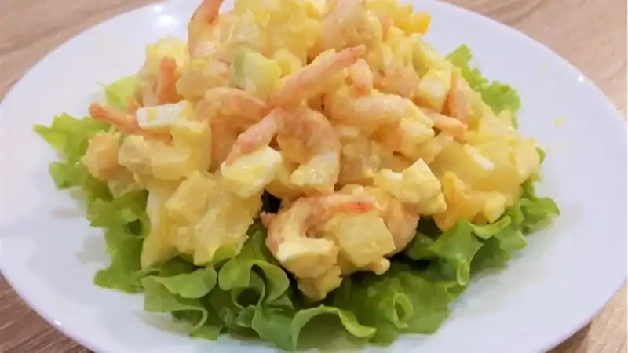
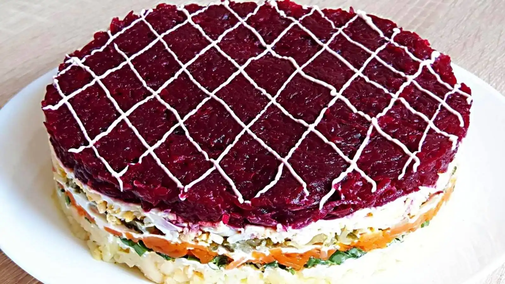
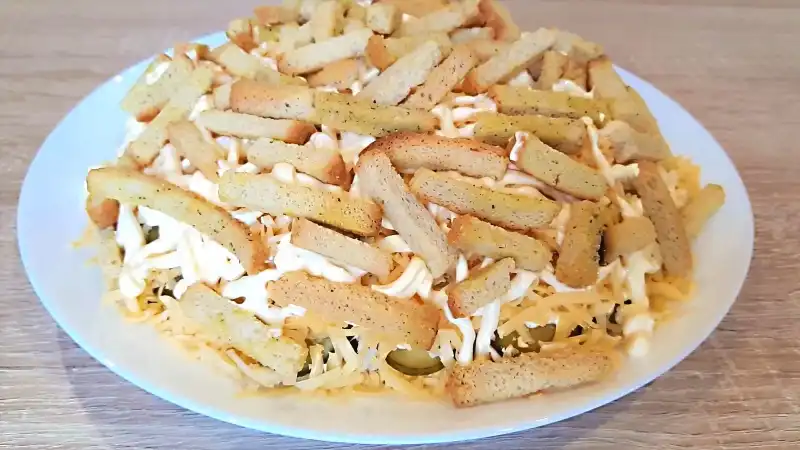
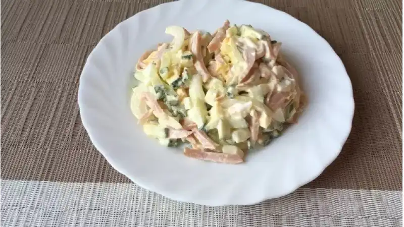
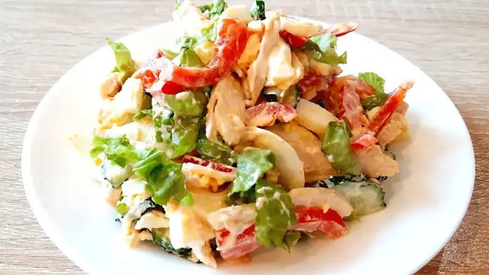
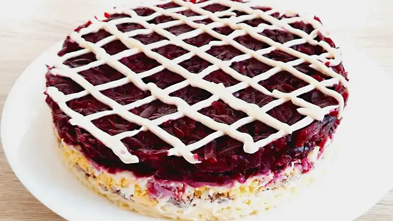
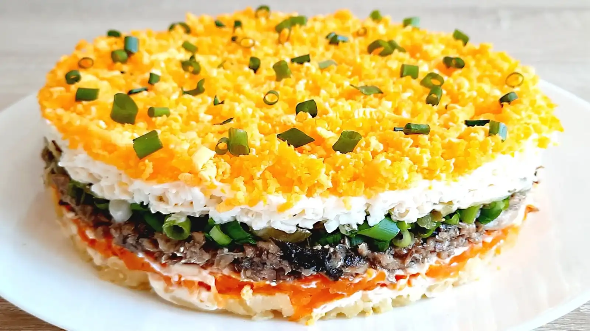
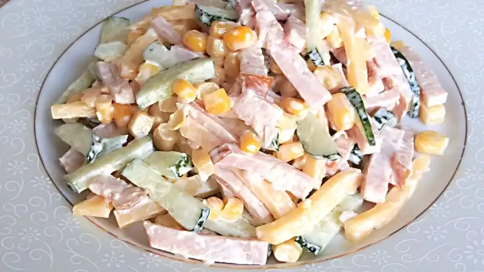
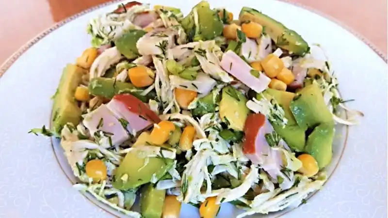

Салат с Сухариками Быстро и Вкусно
Салаты
103286 просмотров
2484
Праздничный Слоёный Салат с Крабовыми Палочками
Салаты
210975 просмотров
242
Быстрый и Полезный Салат из Печени Трески. Закуска из Печени Трески
Диетические и постные блюда | Салаты
87931 просмотров
240
Салат Королевский с Крабовыми Палочками Вкусный и Быстрый
Диетические и постные блюда | Салаты
13292 просмотров
240
Салат с Креветками без Майонеза Вкусный и Лёгкий. Простой рецепт Салата с Креветками.
Диетические и постные блюда | Салаты
12386 просмотров
136
Салат с Чипсами. Салат за 5 Минут с Крабовыми Палочками
Салаты
12664 просмотров
135
Быстрый Салат с Помидорами и Тунцом без Майонеза

Диетические и постные блюда | Салаты
7586 просмотров
132
Овощной салат
Салаты
22692 просмотров
133
Салат Аристократ
Салаты
2440 просмотров
130
Салат с Пекинской Капустой, Куриным Филе и Кукурузой Вкусно и Просто. Салат за 5 минут
Салаты
1710 просмотров
79
Простой и Вкусный Салат из Свёклы. Слоёный Салат из Свёклы
Салаты
8731 просмотров
57
Салат со Шпротами и Сухариками
Салаты
7275 просмотров
46
Быстрый Салат из Капусты и Огурцов. Вкусный Салат за 5 Минут
Салаты
4075 просмотров
35
Салат из Брокколи
Салаты
4264 просмотров
35
Салат с Тунцом и Кукурузой
Салаты
5853 просмотров
35
Салат с ветчиной
Салаты
6286 просмотров
35
Салат с Консервированным Тунцом
Салаты
6692 просмотров
35
Салат с Помидорами и Куриной Грудкой
Салаты
8080 просмотров
35
Быстрый Салат на Праздничный Стол
Салаты
8780 просмотров
35
Салат с Курицей Простой и Быстрый Рецепт
Салаты
10786 просмотров
35
Салат с Грибами и Ананасами
Салаты
10892 просмотров
35
Рулет из Лаваша с Крабовыми Палочками
Салаты
13286 просмотров
35
Салат с Куриной Печенью и Помидорами
Салаты
2486 просмотров
24
Закуска из Печени Трески
Салаты
4486 просмотров
24
Салат с Крабовыми Палочками, Кукурузой и Пекинской Капустой
Салаты
4842 просмотров
24
Вкуснейший Салатик Быстрого Приготовления. Салат за 5 минут

Салаты
7153 просмотров
24
Праздничный Салат Граф
Салаты
7531 просмотров
24
Оригинальная закуска
Салаты
7792 просмотров
55
Салат Нежность с Курицей
Салаты
9942 просмотров
53
Салат Слоёный со Свёклой на Новый Год
Салаты
375 просмотров
52
Новогодний Салат с Апельсинами
Салаты
1286 просмотров
49
Закуска с Мясом Криля и Кукурузой. Вкусная Закуска за 5 минут.
Салаты
1797 просмотров
48
Салат с Пекинской Капустой, Копчёной Курицей и Сухариками
Салаты
1942 просмотров
45
Вкусный и Быстрый Салат с Пекинской Капустой
Салаты
1953 просмотров
42
Слоёный Салат из Свёклы и Курицы
Салаты
1986 просмотров
41
Салат с Курицей и Огурцами
Салаты
2153 просмотров
29
Салат с Печенью Трески
Салаты
220 просмотров
28
Салат слоёный с скумбрией
Салаты
2280 просмотров
23
Слоёный Салат со Шпротами
Салаты
2553 просмотров
22
Салат с Ветчиной, Сыром и Кукурузой
Салаты
3292 просмотров
13
Салат с Авокадо и Курицей Очень Вкусный
Салаты
430 просмотров
13
Салат с Кальмарами
Салаты
7931 просмотров
12